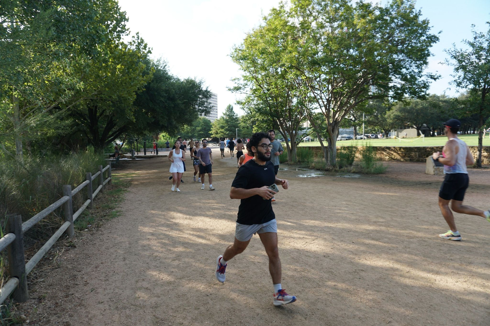
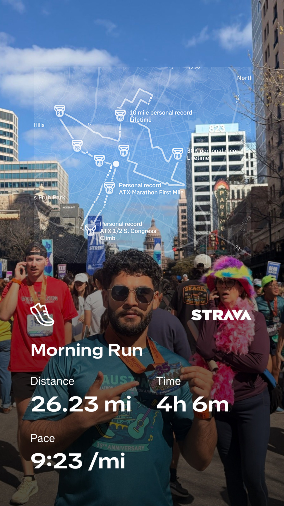
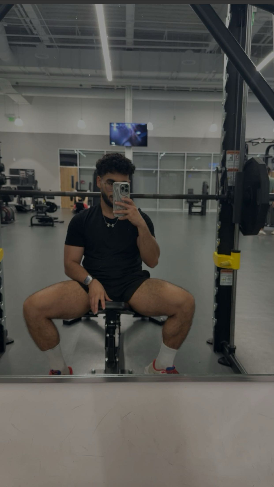

Manufacturing & Process Engineering
LPBF parameter screening, additive manufacturing, process optimization, first-pass yield improvement, ceramic composites, and energy impact analysis.
Industrial & Systems Engineering Ph.D. candidate at Texas A&M University working across advanced manufacturing, AI hardware materials, machine learning, and uncertainty-aware digital twins.
I build experimental and computational workflows that turn sparse process data into engineering decisions.
My research spans low-power neuromorphic nanocomposites, physics-informed laser powder bed fusion quality prediction, Bayesian digital twins for experimental prioritization, and low-energy ceramic additive manufacturing. I combine materials processing, device characterization, statistical modeling, and optimization for R&D, process engineering, manufacturing analytics, and digital manufacturing work.
At Texas A&M University, I work as a Graduate Research Assistant advised by Dr. Shiren Wang and also serve as Managing Editor for the Journal of Neuromorphic Intelligence.
LPBF parameter screening, additive manufacturing, process optimization, first-pass yield improvement, ceramic composites, and energy impact analysis.
Neuromorphic devices, CNT/PDMS and ZnO/PVP nanocomposites, flexible electronics, memristive behavior, and low-power synaptic primitives.
Bayesian inference, uncertainty quantification, physics-informed ML, few-shot learning, training-free classifiers, clustering, and t-SNE.
SEM, TEM, electrical characterization, bending and cyclic reliability testing, polymer processing, nanocomposite synthesis, and validation.
Python, R, SQL, MATLAB, Jupyter Notebook, RStudio, Minitab, Tableau, Power BI, SolidWorks, and Microsoft Office Suite.
Journal operations, peer-review coordination, teaching assistance, student mentoring, manuscript preparation, and cross-disciplinary collaboration.
Texas A&M University - Industrial & Systems Engineering
Journal of Neuromorphic Intelligence
Texas A&M University
Texas A&M University
University of Mississippi
Low-cost flexible CNT/PDMS and ZnO/PVP nanocomposites for durable, heterostimuli-modulated devices that emulate synaptic behavior.
PIKNN, a training-free classifier in an 8-D physics-constrained feature space for rapid cross-material quality screening.
A probabilistic calibration and risk-aware optimization workflow for experimental prioritization under noisy, limited observations.
Rapid fabrication of complex ceramic composites including gyroid heat exchangers for extreme-environment thermal management.
A. Hou, R. Liu, J. G. Kim, P. Dhakal, X. Wu, J. Qiu, S. Wang.
Materials Horizons.
P. Dhakal, J. G. Kim, A. Hou, X. Wu, S. Wang.
Manuscript under review, Journal of Intelligent Manufacturing.
J. G. Kim, R. Liu, P. Dhakal, A. Hou, J. Qiu, C. Merkel, M. Zoran, S. Wang.
Matter, 7(3), 1230-1244.
R. Liu, A. Hou, P. Dhakal, C. Gao, J. Qiu, S. Wang.
Journal of Cleaner Production, 452, 142122.
P. Dhakal, X. Wu, J. G. Kim, A. Hou, S. Wang.
Journal of Neuromorphic Intelligence, 1, 31-37.
Supported Modern Manufacturing Methods for Engineering Design, Facilities Design and Material Handling, and Engineering Economy at Texas A&M University.
Mentored undergraduate and graduate students progressing to United Airlines and graduate study at Texas A&M University.
Journal peer reviewer for Scientific Reports and member of IISE and SME professional communities.
Beyond the lab
Outside the lab, I bring the same consistency and energy to training that I bring to research. Running and strength work keep me focused, resilient, and grounded through long goals that demand steady progress.


I ran the Austin Marathon in 2026, a good reminder that long projects and long races reward the same habits: patience, consistency, and pacing.

I lift religiously. It keeps me disciplined, grounded, and ready for the next demanding thing.
I am interested in roles and collaborations across advanced manufacturing, AI hardware materials, manufacturing analytics, process optimization, and digital twins.
pdhakal321@gmail.com